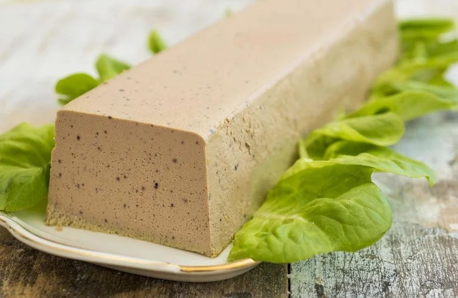

Acompanhamentos
Patê de fígado de galinha

Ingredientes
- 1,5 kg de fígados de galinha
- 2 ovos grandes
- 2 gemas
- 2 colheres (chá) de sal
- 1 colher (chá) de pimenta-do-reino
- 1 colher (sopa) de manjericão bem picado
- 1 xícara de molho branco, grosso
- 2 colheres (sopa) de vinho Madeira ou conhaque
- Manteiga para untar
Modo de preparo
- Preaqueça o forno em temperatura média (180 °C). Limpe os fígados, retirando todos os filamentos.
- Coloque os fígados no liquidificador com os ovos, as gemas, o sal, a pimenta-do-reino e o manjericão. Bata por 1 minuto.
- Adicione o molho branco e o vinho ou conhaque, e bata por mais 15 segundos.
- Passe por uma peneira e deixe cair sobre uma terrina.
- Coloque a mistura numa fôrma de pão ou bolo inglês untada (7 × 12 × 25 cm, capacidade de 5 xícaras).
- Leve ao forno preaquecido, dentro de uma assadeira com água fervente, e asse por cerca de 30 minutos.
- Deixe esfriar. Para servir quente, cubra com papel-alumínio e aqueça em forno bem baixo após descongelar.
Observação
Decore com tiras de pimentão vermelho em conserva e sirva com torradas.